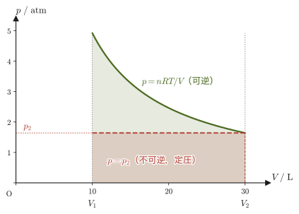
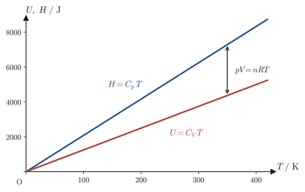
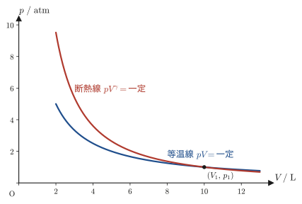
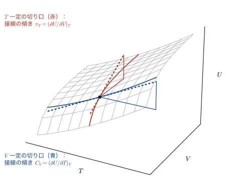
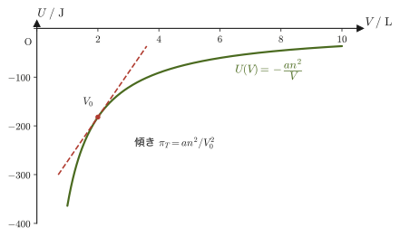
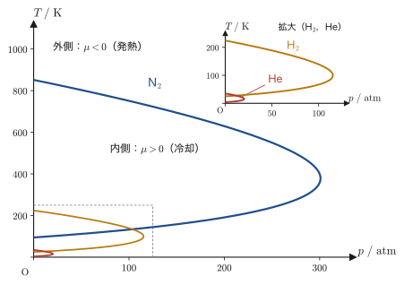

第27章熱容量・エンタルピーとジュール＝トムソン効果
二酸化炭素のボンベのバルブを開けて，高圧の気体を勢いよく噴き出させると，バルブのまわりが冷たくなる——外から何も冷やしていないのに，である．（スプレー缶が冷たくなるのは，主に中の液体が蒸発するときに熱を奪うためで，これとは別の現象である．）この不思議な現象は，高圧の気体を「多孔質の栓」や細い弁のような狭い隙間に無理やり押し通して低圧側へ逃がすと温度が変化する，ジュール＝トムソン効果（Joule–Thomson effect）と呼ばれるものである．実は，私たちの身の回りにある冷蔵庫やエアコンの冷媒が通る膨張弁（絞り）は，この絞り膨張による冷却の考え方を土台にしており，究極の低温である液体ヘリウムをつくる装置でも，最後の段でこの効果が使われる．本章では，この効果がエンタルピー（enthalpy）という量の性質から生まれることを，一行も飛ばさずに導く．
そのために必要な道具が，熱容量である．高校物理では「熱容量 $C$ とは物体の温度を $1\ \mathrm{K}$ 上げるのに必要な熱量」と教わり，比熱 $c$ との関係 $C=mc$ を習ったはずである．しかし，気体の場合，温度を上げる条件——体積を一定に保つか，圧力を一定に保つか——によって必要な熱量が変わってしまう．そこで定積熱容量 $C_V$ と定圧熱容量 $C_p$ という2つの熱容量を区別する必要があり，この区別のために内部エネルギー $U$ とエンタルピー $H=U+pV$ という2つの状態量を偏微分で定義し直すことになる．さらに，気体を熱を逃がさず（断熱的に）圧縮・膨張させたときにどう振る舞うかを表すポアソンの公式（自転車の空気入れを勢いよく押すと熱くなる理由）も，同じ道具立てから導かれる．
本章はまた，$\left(\pdiff{U}{V}\right)_T$ のように「何を一定に保って偏微分するか」を明示する記法——熱力学に特有の書き方——を本格的に使い始める最初の章でもある．大学数学 第6章 6.2節で学んだ偏微分の考え方を，「3つ以上の変数のうち，2つを独立に選び，残りを従属変数として扱う」という熱力学的な状況に適用する練習だと思ってほしい．偏微分の記法に戸惑ったら，いつでも「変数を1つ固定して，残り1つで微分するだけ」という6.2節の基本に立ち返るとよい．
- 気体が外部からされる仕事 $W=-\int p_{\mathrm{ex}}\,\dd V$ を，定圧膨張・自由膨張・可逆（準静的）膨張・理想気体の等温可逆膨張という4つの典型例で具体的に計算する
- 熱容量 $C=\dd Q/\dd T$ から定積熱容量 $C_V=\left(\pdiff{U}{T}\right)_V$ を導き，エンタルピー $H=U+pV$ を定義して定圧熱容量 $C_p=\left(\pdiff{H}{T}\right)_p$ を導く
- 断熱可逆変化の関係式 $C_V\,\dd T=-p\,\dd V$ から，理想気体のポアソンの公式 $TV^{\gamma-1}=\text{一定}$，$pV^{\gamma}=\text{一定}$（$\gamma=C_p/C_V$）を導く
- 内部エネルギーの全微分 $\dd U=\pi_T\,\dd V+C_V\,\dd T$（$\pi_T$：内圧）から，膨張率 $\alpha$ と等温圧縮率 $\kappa_T$ を定義し，マイヤーの関係式 $C_p-C_V=nR$（理想気体）および $C_p-C_V=\alpha^2TV/\kappa_T$（一般）を導く
- エンタルピーの全微分 $\dd H=-\mu C_p\,\dd p+C_p\,\dd T$ からジュール＝トムソン係数 $\mu=\left(\pdiff{T}{p}\right)_H$ と等温ジュール＝トムソン係数 $\mu_T=\left(\pdiff{H}{p}\right)_T=-C_p\mu$ を定義し，逆転温度・気体の液化（室温での液体ヘリウムの作り方）へつなげる
もとにしたノート：望月泰英『物理学ノート 熱力学』 pp. 32–39（p.40 は白紙）．
27.1 膨張の仕事 — 定圧・自由・可逆・等温可逆膨張
第26章で見たように，気体（系）を外圧 $p_{\mathrm{ex}}\ [\mathrm{Pa}]$ に逆らって体積 $\dd V\ [\mathrm{m^3}]$ だけ膨張させるとき，気体が外部からされる仕事 $\dd'W$（不完全微分であることを表す記号 $\dd'$ については第26章を見よ）は
\begin{equation} \dd'W=-p_{\mathrm{ex}}\,\dd V \label{eq:27-work-diff} \end{equation}であった．気体が体積 $V_1$ から $V_2$ まで変化するときにされる仕事の総量は，式 \eqref{eq:27-work-diff} を積分して
\begin{equation} W=\int \dd'W=-\int_{V_1}^{V_2}p_{\mathrm{ex}}\,\dd V \label{eq:27-work-int} \end{equation}となる．気体が外部にする仕事は $W'=-W$ である（本書の符号の約束，第23章 この部を通じての約束）．以下では，外圧 $p_{\mathrm{ex}}$ のかけ方によって式 \eqref{eq:27-work-int} がどう具体化するかを，4つの典型的な場合について見ていく．
27.1.1 定圧膨張（$p_{\mathrm{ex}}$ が一定の場合）
おもりを乗せたピストンのように，外圧 $p_{\mathrm{ex}}$ が変化の間じゅう一定に保たれる場合を考える．$p_{\mathrm{ex}}$ は積分変数 $V$ に依存しない定数なので，積分の外に出せる：
$$ W=-\int_{V_1}^{V_2}p_{\mathrm{ex}}\,\dd V=-p_{\mathrm{ex}}\int_{V_1}^{V_2}\dd V=-p_{\mathrm{ex}}\bigl[V\bigr]_{V_1}^{V_2}=-p_{\mathrm{ex}}(V_2-V_1) $$したがって
\begin{equation} W=-p_{\mathrm{ex}}\,\Delta V,\qquad \Delta V\equiv V_2-V_1 \label{eq:27-work-const-p} \end{equation}である．膨張（$\Delta V\gt0$）なら $W\lt0$（気体は外部から負の仕事をされる，すなわち気体が外部に正の仕事をする），圧縮（$\Delta V\lt0$）なら $W\gt0$ となる．
27.1.2 自由膨張（$p_{\mathrm{ex}}=0$ の場合）
真空に向かって気体を膨張させる場合（自由膨張，free expansion）は，外圧が終始 $p_{\mathrm{ex}}=0$ である．式 \eqref{eq:27-work-int} に $p_{\mathrm{ex}}=0$ を代入すると，被積分関数がすべての $V$ で $0$ になるから，
\begin{equation} W=-\int_{V_1}^{V_2}0\cdot\dd V=0 \label{eq:27-work-free} \end{equation}となる．真空には押し返す力が何もないので，気体は仕事をされも，しもしない．自由膨張は，容器の仕切りを取り払うような一瞬の出来事であり，膨張の途中で気体の圧力や温度が一様に定まらない——つまり，$p\text{-}V$ 図の上に描けるような「経路」をもたない典型的な不可逆過程（第26章）である．
27.1.3 可逆膨張（準静的変化）
外圧 $p_{\mathrm{ex}}$ を，気体自身の圧力 $p$ よりほんのわずかだけ小さく保ちながら，ゆっくり膨張させる場合を考える．力のつり合いが常にほぼ成り立っているとみなせるので，
\begin{equation} p_{\mathrm{ex}}=p \label{eq:27-work-reversible-cond} \end{equation}とおいてよい（可逆膨張，reversible expansion，あるいは準静的変化，quasi-static process．第26章で導入した用語である）．このとき式 \eqref{eq:27-work-int} は，容器の中の気体自身の圧力 $p$（気体の状態方程式で決まる量）を使って
\begin{equation} W=-\int_{V_1}^{V_2}p\,\dd V \label{eq:27-work-reversible} \end{equation}と書き直せる．外圧という「外部の設定」の代わりに，気体自身の状態方程式 $p=p(V,T)$ を積分の中に持ち込めるようになった点が，27.1.1・27.1.2 との決定的な違いである．次の 27.1.4 で，これを理想気体について具体的に計算する．
27.1.4 理想気体の等温可逆膨張
導出：理想気体の等温可逆膨張の仕事
気体を理想気体とし，温度 $T$ を一定に保ちながら可逆的に膨張させる場合を考える．理想気体の状態方程式（第23章）
$$ pV=nRT \qquad\therefore\ p=\frac{nRT}{V} $$を式 \eqref{eq:27-work-reversible} に代入する．$T$ は一定（定数）なので，$nRT$ をまとめて積分の外に出せる：
$$ W=-\int_{V_1}^{V_2}p\,\dd V=-\int_{V_1}^{V_2}\frac{nRT}{V}\,\dd V=-nRT\int_{V_1}^{V_2}\frac{1}{V}\,\dd V $$ここで $\displaystyle\int\frac{1}{V}\,\dd V=\ln V+\text{定数}$（大学数学 第5章 5.1節の基本公式）を使うと，
$$ W=-nRT\bigl[\ln V\bigr]_{V_1}^{V_2}=-nRT(\ln V_2-\ln V_1) $$対数の性質 $\ln V_2-\ln V_1=\ln(V_2/V_1)=-\ln(V_1/V_2)$ を使って整理すると，
\begin{equation} W=nRT\ln\frac{V_1}{V_2} \label{eq:27-work-isothermal} \end{equation}が得られる（気体がされる仕事）．気体が外部にする仕事は $W'=-W$ だから，
\begin{equation} W'=nRT\ln\frac{V_2}{V_1} \label{eq:27-work-isothermal-prime} \end{equation}である．膨張なら $V_2\gt V_1$ なので $\ln(V_2/V_1)\gt0$，すなわち $W'\gt0$（気体は正の仕事を外部にする）となり，$W=-W'\lt0$（気体は外部から負の仕事をされる）と符号が一致する．
（導出終わり）
注意：気体が「した」仕事と「された」仕事の取り違えに注意
式 \eqref{eq:27-work-isothermal} の $W=nRT\ln(V_1/V_2)$ は，気体が外部からされる仕事（膨張では負）である．気体が外部にする仕事は，符号を反転した $W'=-W=nRT\ln(V_2/V_1)$（式 \eqref{eq:27-work-isothermal-prime}．膨張なら正）のほうである．$W$ と $W'$ の使い分けは第23章 この部を通じての約束のとおりである．仕事の符号は，誰が誰にする仕事かを確かめてから読む習慣をつけよう．

例題27.1 理想気体の等温可逆膨張の仕事
$n=2.0\ \mathrm{mol}$ の理想気体を，温度 $T=300\ \mathrm{K}$ に保ったまま，体積 $V_1=10\ \mathrm{L}$ から $V_2=30\ \mathrm{L}$ まで可逆的に等温膨張させた．気体がされる仕事 $W$ と，気体が外部にする仕事 $W'$ を求めよ．
解答 式 \eqref{eq:27-work-isothermal}に，$n=2.0\ \mathrm{mol}$，$R=8.314\ \mathrm{J/(mol\,K)}$，$T=300\ \mathrm{K}$，$V_1/V_2=10/30=1/3$ を代入する．
$$ W=nRT\ln\frac{V_1}{V_2}=2.0\times8.314\times300\times\ln\frac{1}{3}\ \mathrm{J} $$$nRT=2.0\times8.314\times300=4988.4\ \mathrm{J}$，$\ln(1/3)=-\ln3\approx-1.0986$ を使うと，
$$ W\approx4988.4\times(-1.0986)\ \mathrm{J}\approx-5480\ \mathrm{J}\approx-5.5\ \mathrm{kJ} $$気体は膨張して外部に仕事をする側なので，される仕事は負である．外部にする仕事は符号を反転して，
$$ W'=-W\approx5.5\times10^{3}\ \mathrm{J}=5.5\ \mathrm{kJ} $$（単位の確認：$[nRT]=\mathrm{mol}\times\mathrm{J/(mol\,K)}\times\mathrm{K}=\mathrm{J}$，$\ln(V_1/V_2)$ は無次元なので，$W$ の単位は $\mathrm{J}$ で正しい）．
27.2 熱容量・定積熱容量とエンタルピー・定圧熱容量
27.1節では，気体が外部からされる仕事 $W$ が，どのように体積変化させるか（定圧・自由・可逆）によって値の変わる量であることを見た．次に問題にしたいのは，気体を「温める」ときに必要な熱量である．高校物理では，物体の温度を $1\ \mathrm{K}$ 上げるのに必要な熱量を熱容量 $C$ といい，比熱 $c$ との関係 $C=mc$ を習った．気体の場合，事情は少し複雑になる．なぜなら，気体を温める際に体積を一定に保つか（定積），それとも圧力を一定に保つか（定圧）で，同じだけ温度を上げるのに必要な熱量が違ってくるからである——定圧の場合は，気体は温まりながら同時に膨張して外部に仕事もするので，その分だけ余計に熱を吸収する必要がある．この節では，まず熱容量を偏微分で定義し直し，定積の場合の定積熱容量 $C_V$ を導く．続いて，定圧の場合を扱いやすくするための新しい状態量エンタルピー $H$ を導入し，定圧熱容量 $C_p$ を定義する．
定義27.1 熱容量
系の温度を $\dd T$ だけ上げるのに必要な熱量を $\dd'Q$（不完全微分，第26章）とするとき，
\begin{equation} C\equiv\frac{\dd'Q}{\dd T} \label{eq:27-heat-capacity-def} \end{equation}を熱容量（heat capacity，単位 $\mathrm{J/K}$）という．より正確には，有限の温度上昇 $\Delta T$ に対して吸収する熱量を $\Delta Q$ として平均熱容量 $\Delta Q/\Delta T$ を考え，$\Delta T\to0$ の極限をとったものが式 \eqref{eq:27-heat-capacity-def} である．
熱容量は物体全体についての量なので，物体が大きいほど大きい．物質ごとの性質を比べるには，物質量 $n$ あたりのモル熱容量 $C_{\mathrm m}$（単位 $\mathrm{J/(mol\,K)}$．定積・定圧では $C_{V,\mathrm m}$，$C_{p,\mathrm m}$．第23章 23.7節で定積モル比熱・定圧モル比熱と呼んだものと同じ量で，モル定積熱容量・モル定圧熱容量ともいう），質量 $m$ あたりの比熱 $c$（単位 $\mathrm{J/(kg\,K)}$）を使う．高校で習った $C=mc$ は，$C=nC_{\mathrm m}=mc$ という関係の一部である．
$Q$ は状態量ではなく径路によって値が変わる量（第26章）なので，式 \eqref{eq:27-heat-capacity-def} の熱容量 $C$ も，一般には「どのような径路で温度を上げたか」に依存する．熱容量も，「何を一定に保って温めるか」を指定してはじめて決まる量なのである．そこで以下では，一定に保つ量を偏微分の添字（$(\ \ )_V$，$(\ \ )_p$）で明示しながら，径路を具体的に指定した2つの熱容量を定義する．まず，体積を一定に保ちながら温度を上げる場合を考えよう．本書の第1法則の符号の約束（第23章 この部を通じての約束）
$$ \dd U=\dd'Q+\dd'W,\qquad \dd'W=-p_{\mathrm{ex}}\,\dd V $$において，体積一定（$\dd V=0$）の準静的変化なら $\dd'W=-p_{\mathrm{ex}}\,\dd V=0$ となるから，$\dd U=\dd'Q$，すなわち定積変化で吸収した熱量はそのまま内部エネルギーの増加分に等しい．したがって，定積のもとでの熱容量は
$$ C_V=\left(\frac{\dd'Q}{\dd T}\right)_V=\left(\pdiff{U}{T}\right)_V $$と書ける．右辺を偏微分で書いたのは，$U$ が一般に温度 $T$ と体積 $V$ の両方に依存する2変数関数 $U=U(T,V)$ だからである（大学数学 第6章 6.2節）．「体積を一定に保って $T$ で微分する」という操作を，添字 $V$ を付けて明示している．
定義27.2 定積熱容量
\begin{equation} C_V\equiv\left(\pdiff{U}{T}\right)_V \label{eq:27-Cv-def} \end{equation}次に，圧力を一定に保ちながら温度を上げる場合を考える．この場合は，$\dd'W=-p\,\dd V\neq0$ なので，$\dd U=\dd'Q+\dd'W$ の右辺から $\dd'Q$ だけを取り出すのに $\dd U$ と $\dd'W$ を分けて扱わねばならず，$C_V$ のときのように「$\dd'Q$ がそのままある状態量の変化に等しい」という単純な関係が使えない．そこで，$U$ と圧力・体積の積 $pV$ を組み合わせた，新しい状態量を導入する．
定義27.3 エンタルピー
内部エネルギー $U$，圧力 $p$，体積 $V$ を用いて，
\begin{equation} H\equiv U+pV \label{eq:27-enthalpy-def} \end{equation}で定義される状態量 $H$ をエンタルピー（enthalpy）という．$U,p,V$ がいずれも状態量なので，$H$ もまた状態量である．単位は $U,pV$ と同じくジュール $\mathrm{J}$（$[pV]=\mathrm{Pa}\cdot\mathrm{m^3}=\mathrm{N/m^2}\cdot\mathrm{m^3}=\mathrm{N\cdot m}=\mathrm{J}$ で確認できる）．
イメージ：エンタルピーは何のための量か
エンタルピーという物理量は，それ自体に「これが何かのエネルギーである」という直接の実感を伴う名前ではない．これは，定圧変化を扱いやすくするために意図的に作られた量である——実際，このあとすぐ確かめるように，定圧変化のもとでは $\dd H=\dd'Q$ という単純な関係が成り立ち，$C_V$ のときと同じ形の議論がそのまま使えるようになる．いわば，「定積のときの $U$ の役割を，定圧のときに肩代わりする」ために用意された状態量が $H$ である．
注意：定積変化では $\dd H$ は熱量に等しくない
式 \eqref{eq:27-enthalpy-def} を全微分すると，積の微分公式（$\dd(pV)=p\,\dd V+V\,\dd p$）より，
$$ \dd H=\dd U+\dd(pV)=\dd U+p\,\dd V+V\,\dd p $$となる．定積変化（$\dd V=0$）を考えると，
$$ \dd H=\dd U+V\,\dd p $$であるが，これは定積変化で吸収する熱量 $\dd'Q=\dd U$（上で見たとおり）とは一般に一致しない（$V\,\dd p\neq0$ の分だけずれる）．つまり，$\dd H=\dd'Q$ という関係は，定積変化では成り立たない．次に見るように，これが成り立つのは定圧変化のときだけである．
定圧変化（$\dd p=0$）の場合を考えよう．式 \eqref{eq:27-enthalpy-def} の全微分は，今度は
$$ \dd H=\dd U+p\,\dd V+V\,\dd p=\dd U+p\,\dd V\qquad(\because\ \dd p=0) $$となる．一方，この変化で吸収する熱量は，第1法則 $\dd U=\dd'Q+\dd'W=\dd'Q-p\,\dd V$（可逆変化で $p_{\mathrm{ex}}=p$ としてよい）より $\dd'Q=\dd U+p\,\dd V$ である．これは，上で求めた $\dd H$ の式の右辺とまったく同じ形をしている．したがって，
\begin{equation} \dd H=\dd'Q\qquad(\text{定圧変化のときだけ}) \label{eq:27-dH-dQ-const-p} \end{equation}という関係が得られる——定積のときに $\dd U=\dd'Q$ が成り立ったのと，ちょうど対をなす関係である．式 \eqref{eq:27-dH-dQ-const-p} を使うと，定積熱容量とまったく同じ論法で，定圧のもとでの熱容量を定義できる．
定義27.4 定圧熱容量
\begin{equation} C_p\equiv\left(\pdiff{H}{T}\right)_p\overset{\text{式}\eqref{eq:27-dH-dQ-const-p}}{=}\left(\frac{\dd'Q}{\dd T}\right)_p \label{eq:27-Cp-def} \end{equation}$H$ が一般に $H=H(T,p)$（$T,p$ の2変数関数）であることに対応して，右辺は「圧力を一定に保って $T$ で微分する」偏微分になっている．式 \eqref{eq:27-Cp-def} の右端の等号は式 \eqref{eq:27-dH-dQ-const-p} により，定圧変化にかぎって成り立つことに注意する．$C_p$ が（ある温度範囲で近似的に）一定とみなせるときは，その範囲での温度変化 $\Delta T$ に対する吸収熱量が $\Delta Q=C_p\,\Delta T$ という簡単な式で計算できる．

例題27.2 定積と定圧で必要な熱量の違い
$n=1.0\ \mathrm{mol}$ の単原子分子理想気体（$C_V=\tfrac32 nR$）を，はじめの状態から $\Delta T=50\ \mathrm{K}$ だけ温度を上げる．(1) 体積を一定に保って温めるとき，吸収する熱量 $\Delta Q_V$ を求めよ．(2) 圧力を一定に保って温めるとき，吸収する熱量 $\Delta Q_p$ を求めよ（単原子分子理想気体では $C_p=\tfrac52 nR$ であることは27.5節で示す）．(3) (1)(2)の差はどんな物理的な意味を持つか．
解答 (1) 定義27.2 より $\Delta Q_V=C_V\Delta T$ である．$C_V=\tfrac32 nR=\tfrac32\times1.0\times8.314=12.47\ \mathrm{J/K}$ なので，
$$ \Delta Q_V=12.47\times50=623.6\ \mathrm{J} $$(2) 定義27.4 より $\Delta Q_p=C_p\Delta T$ である．$C_p=\tfrac52 nR=\tfrac52\times1.0\times8.314=20.79\ \mathrm{J/K}$ なので，
$$ \Delta Q_p=20.79\times50=1039\ \mathrm{J} $$(3) 差をとると，
$$ \Delta Q_p-\Delta Q_V=(C_p-C_V)\Delta T=1039-623.6=416\ \mathrm{J} $$となる．これは，ちょうど $nR\Delta T=1.0\times8.314\times50=415.7\ \mathrm{J}$（有効数字の丸めの範囲で一致）に等しい．図27.2で見たとおり，定圧で温めると気体は同時に膨張して外部に仕事 $W'=p\Delta V=nR\Delta T$（理想気体の定圧変化，$pV=nRT$ より $p\Delta V=nR\Delta T$）をするので，その分だけ余計に熱を吸収しなければならない——この関係が，実は27.5節で厳密に証明するマイヤーの関係式 $C_p-C_V=nR$ そのものである．
27.3 断熱変化の関係式とポアソンの公式
27.2節では，熱を出し入れしながら気体を温める過程を考えた．ここでは逆に，熱の出入りをまったく許さない断熱変化（adiabatic process，$\dd'Q=0$）——たとえば，自転車の空気入れを素早く押すとポンプが熱くなる現象や，音波が空気中を伝わるときの圧縮・膨張——を考える．断熱変化のもとで気体を可逆的（準静的）に圧縮・膨張させたときに，圧力・体積・温度がどのような関係を保つかを表す式が，本節で導くポアソンの公式（Poisson's law）である．
導出：断熱可逆変化の関係式 $C_V\,\dd T=-p\,\dd V$
本書の第1法則の符号の約束（第23章 23.4節）$\dd U=\dd'Q+\dd'W$ において，断熱変化なので $\dd'Q=0$，したがって
$$ \dd U=\dd'W $$である．さらに，この変化が可逆（準静的）であるとすると，気体自身の圧力を $p$ として $\dd'W=-p\,\dd V$（27.1節）が使えるので，
\begin{equation} \dd U=-p\,\dd V \label{eq:27-adiabatic-dU} \end{equation}となる．一方，気体を理想気体とすると，27.4節で示すとおり理想気体の内部エネルギーは温度だけの関数（$U=U(T)$）になるので，どのような過程であっても
\begin{equation} \dd U=C_V\,\dd T \label{eq:27-adiabatic-dU-ideal} \end{equation}が成り立つ（この事実は27.4節で内圧 $\pi_T=(\partial U/\partial V)_T=0$ として厳密に示す．先取りして使うことをここで断っておく）．式 \eqref{eq:27-adiabatic-dU} と式 \eqref{eq:27-adiabatic-dU-ideal} を見比べると，
\begin{equation} C_V\,\dd T=-p\,\dd V \label{eq:27-adiabatic-relation} \end{equation}という関係が得られる．これが，理想気体の断熱可逆変化がみたす基本の関係式である．
（導出終わり）
注意：「断熱だから定積」ではない
式 \eqref{eq:27-adiabatic-dU-ideal} の $\dd U=C_V\,\dd T$ を見ると，$C_V$ の定義（定義27.2）が「体積一定のもとでの」偏微分だったことを思い出して，「断熱変化はどこかで体積が一定になっているのか」と誤解するかもしれない．そうではない——断熱変化では，体積 $V$ は式 \eqref{eq:27-adiabatic-relation} からわかるとおり，一般に大きく変化する．$\dd U=C_V\,\dd T$ が断熱変化でも成り立つ本当の理由は，「体積が一定だから」ではなく，「理想気体では内部エネルギー $U$ がそもそも体積によらず温度だけで決まる（27.4節）」という理想気体に特有の事実による．この事実さえ成り立てば，どんな過程（断熱でも等温でも定圧でも）でも $\dd U=C_V\,\dd T$ が使える．
理想気体の状態方程式 $p=nRT/V$（第23章）を式 \eqref{eq:27-adiabatic-relation} に代入すると，
$$ C_V\,\dd T=-\frac{nRT}{V}\,\dd V $$となる．ここで $C_V$ は温度によらず一定とみなす（単原子・二原子分子の理想気体の室温付近ではよい近似である）．両辺を $T$ で割ると $C_V\dfrac{\dd T}{T}=-nR\dfrac{\dd V}{V}$ となる．左辺は $T$ だけの式，右辺は $V$ だけの式になった（このように変数を左右に分けることを変数分離という）．これを，状態1（$T_1,V_1$）から状態2（$T_2,V_2$）まで積分する：
$$ C_V\int_{T_1}^{T_2}\frac{\dd T}{T}=-nR\int_{V_1}^{V_2}\frac{\dd V}{V} $$$C_V$（上で一定とおいた）を積分の外に出し，$\displaystyle\int\frac{\dd x}{x}=\ln x+\text{定数}$（大学数学 第5章 5.1節）を使うと，
$$ C_V\ln\frac{T_2}{T_1}=-nR\ln\frac{V_2}{V_1}=nR\ln\frac{V_1}{V_2} $$対数の性質 $a\ln x=\ln x^a$ を使って両辺を整理すると，
$$ \ln\left(\frac{T_2}{T_1}\right)^{C_V}=\ln\left(\frac{V_1}{V_2}\right)^{nR} \qquad\Longrightarrow\qquad \left(\frac{T_2}{T_1}\right)^{C_V}=\left(\frac{V_1}{V_2}\right)^{nR} $$両辺を $1/(nR)$ 乗すると $\left(\dfrac{T_2}{T_1}\right)^{C_V/(nR)}=\dfrac{V_1}{V_2}$ となり，これを整理すると，
\begin{equation} V_1T_1^{\,C_V/(nR)}=V_2T_2^{\,C_V/(nR)} \label{eq:27-poisson-form1} \end{equation}が得られる．つまり，量 $VT^{C_V/(nR)}$ が，断熱可逆変化のあいだ一定に保たれる．
先取り：マイヤーの関係式 $C_p-C_V=nR$（27.5節で証明する）
式 \eqref{eq:27-poisson-form1} の指数 $C_V/(nR)$ を，もっとよく使われる比熱比 $\gamma\equiv C_p/C_V$ を使った形に書き換えたい．そのために，27.5節で証明する理想気体のマイヤーの関係式
$$ C_p-C_V=nR $$を，証明に先立って結果だけ使う．これを使うと，
$$ \frac{C_V}{nR}=\frac{C_V}{C_p-C_V}=\frac{1}{\dfrac{C_p}{C_V}-1}=\frac{1}{\gamma-1} $$と書き換えられる（分母・分子を $C_V$ で割った）．
別の道すじもある．最初の変数分離の式 $C_V\,\dd T/T=-nR\,\dd V/V$ に，あらかじめ $nR=C_p-C_V$ を代入して $C_V$ で割ると，$\dfrac{\dd T}{T}=-(\gamma-1)\dfrac{\dd V}{V}$ となる．積分して $\ln\dfrac{T_2}{T_1}=-(\gamma-1)\ln\dfrac{V_2}{V_1}$，すなわち $T_1V_1^{\gamma-1}=T_2V_2^{\gamma-1}$（式 \eqref{eq:27-poisson-TV}）が直接得られる．
この結果を式 \eqref{eq:27-poisson-form1} に代入すると，$V_1T_1^{1/(\gamma-1)}=V_2T_2^{1/(\gamma-1)}$ となる．両辺を $\gamma-1$ 乗すれば，
\begin{equation} T_1V_1^{\,\gamma-1}=T_2V_2^{\,\gamma-1} \label{eq:27-poisson-TV} \end{equation}という，より見慣れた形が得られる．さらに，理想気体の状態方程式から $T=pV/(nR)$ を式 \eqref{eq:27-poisson-TV} に代入すると，
$$ \frac{p_1V_1}{nR}V_1^{\,\gamma-1}=\frac{p_2V_2}{nR}V_2^{\,\gamma-1} $$両辺の $nR$（定数）を払い，$V^1\cdot V^{\gamma-1}=V^{\gamma}$（指数法則）を使ってまとめると，
\begin{equation} p_1V_1^{\,\gamma}=p_2V_2^{\,\gamma} \label{eq:27-poisson-pV} \end{equation}が得られる．式 \eqref{eq:27-poisson-form1}・\eqref{eq:27-poisson-TV}・\eqref{eq:27-poisson-pV} は，どれも同じ断熱可逆変化を異なる変数の組で表しただけの，同値な関係式である．
公式27.1 ポアソンの公式（理想気体の断熱可逆変化）
理想気体を断熱的かつ可逆的（準静的）に変化させるとき，比熱比 $\gamma=C_p/C_V$ を用いて，次のいずれの量も変化の間じゅう一定に保たれる：
\begin{equation} TV^{\gamma-1}=\text{一定},\qquad pV^{\gamma}=\text{一定},\qquad V T^{1/(\gamma-1)}=\text{一定} \label{eq:27-poisson-summary} \end{equation}（3式は互いに同値である．）これをポアソンの公式という．高校物理で「断熱変化では $pV^\gamma=\text{一定}$」と公式として習った関係式が，第1法則と理想気体の状態方程式から導かれたことになる．

例題27.3 断熱圧縮後の圧力と温度
二原子分子理想気体（$\gamma=C_p/C_V=7/5=1.4$）を，はじめ $p_1=1.0\ \mathrm{atm}$，$V_1=10\ \mathrm{L}$，$T_1=300\ \mathrm{K}$ の状態から，体積が $V_2=2.0\ \mathrm{L}$ になるまで断熱可逆的に圧縮した．圧縮後の圧力 $p_2$ と温度 $T_2$ を求めよ．
解答 公式27.1 の $p_1V_1^\gamma=p_2V_2^\gamma$ より，
$$ p_2=p_1\left(\frac{V_1}{V_2}\right)^{\gamma}=1.0\times\left(\frac{10}{2.0}\right)^{1.4}=1.0\times5^{1.4} $$$5^{1.4}=e^{1.4\ln5}=e^{1.4\times1.6094}=e^{2.2532}\approx9.52$ なので，
$$ p_2\approx9.5\ \mathrm{atm} $$温度は，理想気体の状態方程式 $p_1V_1/T_1=p_2V_2/T_2$（ボイル・シャルルの法則）を使って求める：
$$ T_2=T_1\times\frac{p_2V_2}{p_1V_1}=300\times\frac{9.52\times2.0}{1.0\times10}=300\times1.904\approx571\ \mathrm{K} $$（検算として，公式27.1 の $T_1V_1^{\gamma-1}=T_2V_2^{\gamma-1}$ に直接代入しても同じ $T_2\approx571\ \mathrm{K}$ が得られる．圧縮比 $V_1/V_2=5$ という比較的大きな圧縮で，温度が $300\ \mathrm{K}$ から約 $571\ \mathrm{K}$（$298\,{}^\circ\mathrm{C}$ 程度）まで急上昇することがわかる．ディーゼルエンジンが点火プラグなしで軽油に火をつけられるのは，この断熱圧縮による温度上昇を利用しているためである．実際のディーゼルエンジンの圧縮比はこの例（5）の数倍（およそ15〜20）あり，空気が軽油の発火温度を超えるまで熱くなる．）
27.4 内部エネルギーの全微分・内圧・膨張率・等温圧縮率
前節では，「理想気体では $\dd U=C_V\,\dd T$」という事実を先取りして使った．この節では，その理由を内部エネルギー $U$ の全微分にさかのぼって確かめ，あわせて，気体（一般には固体・液体も含む物質）の体積が温度や圧力でどう変わるかを表す2つの量，膨張率 $\alpha$ と等温圧縮率 $\kappa_T$ を導入する．
内部エネルギー $U$ は，一般に温度 $T$ と体積 $V$ の2変数関数 $U=U(T,V)$ である（気体の状態は，$T,V$（または同値な組 $p,V$ や $p,T$）の2つを指定すれば決まる，第23章）．2変数関数の全微分の公式（大学数学 第6章 6.4節）を $U(T,V)$ に適用すると，
\begin{equation} \dd U=\left(\pdiff{U}{V}\right)_T\dd V+\left(\pdiff{U}{T}\right)_V\dd T \label{eq:27-U-total-diff} \end{equation}となる．右辺第2項の係数は，定義27.2 の定積熱容量 $C_V$ そのものである．第1項の係数 $\left(\pdiff{U}{V}\right)_T$（温度を一定に保ったまま，体積を変えたときの内部エネルギーの変化率）には，特別な名前と記号が与えられている．
定義27.5 内圧
次の量を内圧（internal pressure）といい，$\pi_T$ と書く：
\begin{equation} \pi_T\equiv\left(\pdiff{U}{V}\right)_T \label{eq:27-piT-def} \end{equation}「圧力」という名がついているのは，次元（単位）が実際に圧力と同じ $\mathrm{J/m^3=Pa}$ になるからである（エネルギーを体積で割った量の次元は，圧力の次元 $\mathrm{N/m^2=N\cdot m/m^3=J/m^3}$ と一致する）．式 \eqref{eq:27-U-total-diff} に定義27.2・定義27.5 を代入すると，内部エネルギーの全微分は
\begin{equation} \dd U=\pi_T\,\dd V+C_V\,\dd T \label{eq:27-U-total-diff-piT} \end{equation}と書ける．

イメージ：内圧とは何か
内圧 $\pi_T$ は，「気体分子どうしが引き合ったり反発したりする力（分子間力）が，内部エネルギーの体積依存性としてどれだけ効いてくるか」を表す量である．満員電車の中で人どうしが押し合う様子を思い浮かべるとよい．混んでくる（体積が小さくなる）ほど，人どうしの間にはたらく力が効いてくる．気体分子も，たがいに近づくほど分子間力の影響を受け，その分だけエネルギーが変わる．この，「体積を変えたときの，分子間力に由来するエネルギーの変化率」が内圧である．分子どうしがまったく相互作用しない理想気体では，体積を変えても（分子間の平均距離が変わっても）分子間力によるエネルギーはそもそも存在しないので，$U$ は体積によらない——これは，このあとすぐ確かめる．一方，分子間に引力がはたらく実在気体（たとえばファンデルワールス気体）では，体積を大きくして分子どうしを引き離すと，引力に逆らってエネルギーを与えなければならないので $U$ が増加し，$\pi_T\gt0$ になる．次に見る図27.5は，まさにこの様子を実在気体のモデルで具体的に描いたものである．
理想気体の $U$ が体積によらないことは，実験でも裏づけられている．ジュール（Joule）は，圧縮した気体を真空の容器へ自由膨張させても，水槽の水温がほとんど変わらないことを見いだした（気体は熱も仕事も受け取らないので $\Delta U=0$．温度が変わらないなら，$U$ は体積によらないことになる）．実在気体では，より精密な実験でわずかな温度変化が見つかり，$\pi_T\neq0$ であることがわかる．なお，$\pi_T$ を状態方程式から計算する公式 $\pi_T=T(\partial p/\partial T)_V-p$ を27.5節で導き，理想気体で $\pi_T=0$ となることを確かめる．

理想気体の場合，内圧が実際に0になることを確かめよう．理想気体の状態方程式 $p=nRT/V$ は，圧力が温度と体積だけで決まり，分子間力に相当する項を含まない．理想気体の内部エネルギーも同様に，分子の熱運動の運動エネルギーの総和だけからなり，分子間力によるポテンシャルエネルギーを持たない（気体分子運動論とエネルギー等分配則，第24章 24.3節）．したがって理想気体では $U$ は体積によらず温度だけの関数になり，
\begin{equation} \pi_T=\left(\pdiff{U}{V}\right)_T=0\qquad(\text{理想気体}) \label{eq:27-piT-ideal-zero} \end{equation}である．これを式 \eqref{eq:27-U-total-diff-piT} に代入すると，
\begin{equation} \dd U=C_V\,\dd T\qquad(\text{理想気体，任意の過程で成り立つ}) \label{eq:27-dU-ideal} \end{equation}となる——これが，27.3節で断熱変化について先取りして使った関係式の正体である．式 \eqref{eq:27-dU-ideal} には「断熱」という条件が一切入っていないことに注意しよう．理想気体であれば，断熱変化でも等温変化でも定圧変化でも，$\dd U=C_V\,\dd T$ がつねに成り立つ．これは，理想気体という特別な物質モデルの性質であって，一般の物質（内圧が0でない実在気体や液体・固体）では成り立たない．
次に，体積が温度や圧力によってどう変わるかを表す2つの係数を定義する．
定義27.6 膨張率
圧力を一定に保ったまま温度を変えたときの，単位体積あたりの体積変化率を（体積）膨張率（coefficient of thermal expansion）といい，
\begin{equation} \alpha\equiv\frac{1}{V}\left(\pdiff{V}{T}\right)_p \label{eq:27-alpha-def} \end{equation}と定義する．単位は $\mathrm{K^{-1}}$．$\left(\pdiff{V}{T}\right)_p$（圧力一定のもとでの温度変化に対する体積の変化率）を，もとの体積 $V$ で割って「$1\ \mathrm{m^3}$ あたり」の変化率にそろえたものが $\alpha$ である——同じ $\left(\pdiff{V}{T}\right)_p$ の値でも，もとの体積が大きいか小さいかで「よく膨張する物質かどうか」の感じ方は変わるはずなので，体積で割って規格化しておくと物質固有の量として比較しやすくなる．
定義27.7 等温圧縮率
温度を一定に保ったまま圧力を変えたときの，単位体積あたりの体積変化率（の符号を変えたもの）を等温圧縮率（isothermal compressibility）といい，
\begin{equation} \kappa_T\equiv-\frac{1}{V}\left(\pdiff{V}{p}\right)_T \label{eq:27-kappaT-def} \end{equation}と定義する．単位は圧力の逆数 $\mathrm{Pa^{-1}}$．圧力を上げれば体積は必ず減る（$\left(\pdiff{V}{p}\right)_T\lt0$）ので，先頭に負号を付けて $\kappa_T$ が正の量になるようにしてある．
注意：体積弾性係数 $K$ との関係
ここで定義した等温圧縮率は，第19章で学んだ体積弾性係数 $K$（定義19.3，$K=\sigma/\varepsilon_V$）と表裏の関係にある量である．混同を避けるため，本書ではこの量を（一部の教科書のように $K_T$ と書かず）$\kappa_T$ と書く．両者の関係を確認しよう．第19章の注意（定義19.3の直後）で見たとおり，圧力 $p$（正の量）を使うと $K=-p/\varepsilon_V$（$\varepsilon_V=\Delta V/V$）であった．これを微分の言葉で書き直すと $K=-V\left(\pdiff{p}{V}\right)_T$（等温変化を考える場合）となり，これは式 \eqref{eq:27-kappaT-def} の逆数にほかならない：
\begin{equation} K=\frac{1}{\kappa_T} \label{eq:27-K-kappaT-relation} \end{equation}体積弾性係数 $K$ は「圧力を上げたときにどれだけ縮みにくいか（硬さ）」を表す量，等温圧縮率 $\kappa_T$ は「どれだけ縮みやすいか（柔らかさ）」を表す量であり，同じ現象を逆数の関係で表す2つの言い方だと考えればよい．気体の分野では $\kappa_T$（圧縮率）を使う流儀，材料力学の分野では $K$（弾性係数）を使う流儀が，それぞれ伝統的に定着している．
理想気体について，$\alpha$ と $\kappa_T$ を具体的に計算してみよう．理想気体の状態方程式 $pV=nRT$ を，圧力 $p$ を一定に保ったまま $V$ について解くと $V=nRT/p$ となる．これを $T$ で偏微分すると，
$$ \left(\pdiff{V}{T}\right)_p=\frac{nR}{p} $$である（$p$ は定数として扱う）．式 \eqref{eq:27-alpha-def} に代入し，さらに $V=nRT/p$（同じ状態方程式）を使うと，
$$ \alpha=\frac{1}{V}\cdot\frac{nR}{p}=\frac{1}{nRT/p}\cdot\frac{nR}{p}=\frac{1}{T} $$すなわち，理想気体では膨張率が温度の逆数に等しい：$\alpha=1/T$（理想気体）．次に，$V=nRT/p$ を，今度は温度 $T$ を一定に保ったまま $p$ について偏微分する．$V$ は $p$ の$-1$乗に比例する形（$V=nRT\cdot p^{-1}$）なので，べき関数の微分公式より，
$$ \left(\pdiff{V}{p}\right)_T=nRT\times(-1)p^{-2}=-\frac{nRT}{p^2}=-\frac{V}{p} $$（最後の等号で，ふたたび $V=nRT/p$ を使って $nRT=pV$ と書き換えた）．式 \eqref{eq:27-kappaT-def} に代入すると，
\begin{equation} \kappa_T=-\frac{1}{V}\left(-\frac{V}{p}\right)=\frac{1}{p}\qquad(\text{理想気体}) \label{eq:27-kappaT-ideal} \end{equation}となる．理想気体の等温圧縮率は，圧力の逆数に等しい——気体の種類（分子の質量や大きさ）にはいっさいよらず，圧力だけで決まるという，理想気体に特有の単純な結果である．
イメージ：なぜ圧力が高いほど圧縮率が小さいのか
式 \eqref{eq:27-kappaT-ideal} は「圧力が高いほど $\kappa_T$（縮みやすさ）が小さくなる」ことを表す．$\kappa_T$ は絶対的な体積変化 $\Delta V$ ではなく，もとの体積に対する割合 $\Delta V/V$ で定義されていることに注意しよう．温度一定の理想気体では $pV=\text{一定}$ である．この両辺の対数をとって微分すると $\dfrac{\dd p}{p}+\dfrac{\dd V}{V}=0$，すなわち $\dfrac{\dd V}{V}=-\dfrac{\dd p}{p}$ となる．体積の減る割合は，圧力の増える割合に等しい．同じ圧力の増分 $\dd p$ を加えても，もとの圧力 $p$ が大きいほど圧力の「割合の増加」$\dd p/p$ は小さいので，体積の割合の減少 $\abs{\dd V/V}$ も小さくなる．これが $\kappa_T=-\dfrac1V\dfrac{\dd V}{\dd p}=\dfrac1p$ の意味である．
例題27.4 理想気体の膨張率と等温圧縮率
室温 $T=300\ \mathrm{K}$ の理想気体について，(1) 膨張率 $\alpha$ を求めよ．(2) 圧力が $p=1.0\ \mathrm{atm}$ のときと $p=10\ \mathrm{atm}$ のときの等温圧縮率 $\kappa_T$ をそれぞれ求め，比較せよ．
解答 (1) $\alpha=1/T$ より，
$$ \alpha=\frac{1}{300\ \mathrm{K}}\approx3.33\times10^{-3}\ \mathrm{K^{-1}} $$(2) $\kappa_T=1/p$ より，$p=1.0\ \mathrm{atm}=1.013\times10^{5}\ \mathrm{Pa}$ のとき，
$$ \kappa_T=\frac{1}{1.013\times10^{5}\ \mathrm{Pa}}\approx9.87\times10^{-6}\ \mathrm{Pa^{-1}} $$$p=10\ \mathrm{atm}=1.013\times10^{6}\ \mathrm{Pa}$ のときは，
$$ \kappa_T=\frac{1}{1.013\times10^{6}\ \mathrm{Pa}}\approx9.87\times10^{-7}\ \mathrm{Pa^{-1}} $$となり，圧力を10倍にすると等温圧縮率はちょうど $1/10$ になる（式 \eqref{eq:27-kappaT-ideal} の反比例関係どおり）．体積弾性係数で言えば，$K=1/\kappa_T$ は圧力に比例して10倍になる——高圧の気体ほど，同じ圧力の増分に対して「硬く」なることが数値でも確認できる．
27.5 マイヤーの関係式 — 理想気体と一般の場合
ここまでの節で，何度か「マイヤーの関係式 $C_p-C_V=nR$」を証明抜きで先取りして使ってきた．この節では，まず理想気体についてこの関係式を導出し，続いて，理想気体にかぎらない一般の物質について成り立つマイヤーの関係式を導く．
導出：マイヤーの関係式（理想気体）
定義27.2・定義27.4 より，$C_p-C_V$ を書き下すと，
$$ C_p-C_V=\left(\pdiff{H}{T}\right)_p-\left(\pdiff{U}{T}\right)_V $$である．$H=U+pV$（定義27.3）を代入すると，
$$ C_p-C_V=\left(\pdiff{}{T}(U+pV)\right)_p-\left(\pdiff{U}{T}\right)_V =\left(\pdiff{U}{T}\right)_p+\left(\pdiff{}{T}(pV)\right)_p-\left(\pdiff{U}{T}\right)_V $$理想気体では，式 \eqref{eq:27-piT-ideal-zero}（27.4節）で確かめたとおり $U$ は温度だけの関数（体積にはよらない）なので，「圧力一定で $T$ 微分」しても「体積一定で $T$ 微分」しても同じ値になる：
$$ \left(\pdiff{U}{T}\right)_p=\left(\pdiff{U}{T}\right)_V $$したがって，上の式の第1項と第3項は打ち消し合い，
$$ C_p-C_V=\left(\pdiff{}{T}(pV)\right)_p $$だけが残る．$p$ を一定に保つと $p$ は定数なので，積の微分で $\left(\pdiff{}{T}(pV)\right)_p=p\left(\pdiff{V}{T}\right)_p$ と外に出せる．理想気体の状態方程式から $V=nRT/p$ なので，$p$ 一定のもとで $\left(\pdiff{V}{T}\right)_p=nR/p$ であり，
$$ \left(\pdiff{}{T}(pV)\right)_p=p\left(\pdiff{V}{T}\right)_p=p\cdot\frac{nR}{p}=nR $$となる（$p$ が約分された．$n,R$ は定数で，$T$ の1次関数の微分は係数そのもの）．よって，
\begin{equation} C_p-C_V=nR\qquad(\text{理想気体}) \label{eq:27-mayer-ideal} \end{equation}が得られる．
（導出終わり）
公式27.2 マイヤーの関係式（理想気体）
理想気体では，定圧熱容量と定積熱容量の差は，気体定数 $R$ と物質量 $n$ の積に等しい：
$$ C_p-C_V=nR $$これで，例題27.2 や 27.3節で先取りして使った関係式が正しいことが確かめられた．
例題27.5 単原子分子・二原子分子理想気体のマイヤーの関係式
気体分子運動論（第24章 24.3節）によれば，単原子分子理想気体では $C_V=\tfrac32 nR$，二原子分子理想気体（並進3＋回転2の自由度をもち，室温付近では分子の振動が励起されない場合）では $C_V=\tfrac52 nR$ であることが知られている．それぞれの $C_p$ を求め，公式27.2 が成り立つことを確かめよ．
解答 単原子分子：公式27.2 より $C_p=C_V+nR=\tfrac32 nR+nR=\tfrac52 nR$．差を計算すると $C_p-C_V=\tfrac52 nR-\tfrac32 nR=nR$ となり，たしかに公式27.2 と一致する．二原子分子：同様に $C_p=C_V+nR=\tfrac52 nR+nR=\tfrac72 nR$，差は $C_p-C_V=\tfrac72 nR-\tfrac52 nR=nR$ で一致する．数値でも確認すると，$n=1.0\ \mathrm{mol}$ のとき $nR=8.314\ \mathrm{J/K}$ であり，単原子分子・二原子分子のどちらでも $C_p-C_V$ はちょうどこの値になる（気体の種類によらず，理想気体であれば常に同じ差になる，というのが公式27.2 の主張である）．
公式27.2 は理想気体だけで成り立つ特別な関係式である．では，分子間力がはたらく実在気体や，液体・固体では，$C_p-C_V$ はどう表されるだろうか．これを調べるには，途中で使う数学の道具を先に準備しておく必要がある．
数学の道具：循環関係式（3変数の偏微分をめぐる恒等式）
圧力・体積・温度のように，3つの変数 $x,y,z$ が状態方程式 $F(x,y,z)=0$ で互いに関係づけられているとき（どれか2つを指定すれば残り1つが決まる），次の恒等式が成り立つ：
\begin{equation} \left(\pdiff{x}{y}\right)_z\left(\pdiff{y}{z}\right)_x\left(\pdiff{z}{x}\right)_y=-1 \label{eq:27-cyclic-relation} \end{equation}これを循環関係式（cyclic relation，あるいは triple product rule）という．3つの偏微分をこの順に「循環」させて掛け合わせると，$+1$ ではなく $-1$ になるという，やや意外な形の恒等式である．導いておこう．$z=z(x,y)$ とみなして全微分すると，
$$ \dd z=\left(\pdiff{z}{x}\right)_y\dd x+\left(\pdiff{z}{y}\right)_x\dd y $$である．ここで，$z$ を一定に保ったまま $x,y$ を変化させる場合（$\dd z=0$）を考えると，
$$ 0=\left(\pdiff{z}{x}\right)_y\dd x+\left(\pdiff{z}{y}\right)_x\dd y \qquad\Longrightarrow\qquad \left.\frac{\dd x}{\dd y}\right|_{z}=-\frac{\left(\pdiff{z}{y}\right)_x}{\left(\pdiff{z}{x}\right)_y} $$左辺の「$z$ を一定に保ったときの，$y$ の変化に対する $x$ の変化率」は，定義よりまさに $\left(\pdiff{x}{y}\right)_z$ である．また，右辺の $\left(\pdiff{z}{y}\right)_x$ と $\left(\pdiff{z}{x}\right)_y$ はそれぞれ，1変数関数の逆関数の微分公式（$\dfrac{\dd y}{\dd x}=1\Big/\dfrac{\dd x}{\dd y}$ の類似）にあたる逆数関係 $\left(\pdiff{z}{y}\right)_x=1\Big/\left(\pdiff{y}{z}\right)_x$，$\left(\pdiff{z}{x}\right)_y=1\Big/\left(\pdiff{x}{z}\right)_y$ で書き換えられる（一方の変数を固定してしまえば，残り2変数の関係は普通の1変数関数どうしの関係になるので，通常の逆関数の微分公式がそのまま使える）．代入すると，
$$ \left(\pdiff{x}{y}\right)_z=-\frac{1\big/\left(\pdiff{y}{z}\right)_x}{1\big/\left(\pdiff{x}{z}\right)_y}=-\left(\pdiff{x}{z}\right)_y\Big/\left(\pdiff{y}{z}\right)_x $$両辺に $\left(\pdiff{y}{z}\right)_x$ を掛けると $\left(\pdiff{x}{y}\right)_z\left(\pdiff{y}{z}\right)_x=-\left(\pdiff{x}{z}\right)_y$．さらに両辺に $\left(\pdiff{z}{x}\right)_y$ を掛け，右辺に逆数関係 $\left(\pdiff{x}{z}\right)_y\left(\pdiff{z}{x}\right)_y=1$ を使うと，
$$ \left(\pdiff{x}{y}\right)_z\left(\pdiff{y}{z}\right)_x\left(\pdiff{z}{x}\right)_y=-\left(\pdiff{x}{z}\right)_y\left(\pdiff{z}{x}\right)_y=-1 $$となり，式 \eqref{eq:27-cyclic-relation} が示された．この関係式は，このあと本節の一般のマイヤーの関係式の証明，および27.6節・27.7節のジュール＝トムソン係数の証明で繰り返し使う．
導出：マイヤーの関係式（一般の場合）
理想気体にかぎらない一般の物質について，先ほどと同じ出発点
$$ C_p-C_V=\left(\pdiff{U}{T}\right)_p+\left(\pdiff{}{T}(pV)\right)_p-\left(\pdiff{U}{T}\right)_V $$から出発するが，今度は $\left(\pdiff{U}{T}\right)_p=\left(\pdiff{U}{T}\right)_V$（理想気体だけで成り立つ関係）が使えない．そこで，$U=U(T,V)$ であり，圧力 $p$ を一定に保つと $V$ も $T$ とともに変わる（$V=V(T,p)$）ことに注意して，合成関数の偏微分（大学数学 第6章 6.4節）を使う．$U$ は $T$ に直接依存するとともに，$V$ を通じても $T$ に依存するので，
$$ \left(\pdiff{U}{T}\right)_p=\left(\pdiff{U}{T}\right)_V+\left(\pdiff{U}{V}\right)_T\left(\pdiff{V}{T}\right)_p=C_V+\pi_T\left(\pdiff{V}{T}\right)_p $$が得られる（これは，式 \eqref{eq:27-U-total-diff-piT}（27.4節）の両辺を，圧力一定のもとで $\dd T$ で割った形と同じである）．ここで，定義27.6 の膨張率 $\alpha=\dfrac1V\left(\pdiff{V}{T}\right)_p$ より $\left(\pdiff{V}{T}\right)_p=\alpha V$ なので，
\begin{equation} \left(\pdiff{U}{T}\right)_p=C_V+\pi_T\alpha V \label{eq:27-dUdTp-general} \end{equation}となる．また，$\left(\pdiff{}{T}(pV)\right)_p=p\left(\pdiff{V}{T}\right)_p=p\alpha V$ である（$p$ は一定なので積の微分公式で外に出せる）．これらを $C_p-C_V$ の式に代入すると，
$$ C_p-C_V=\underbrace{(C_V+\pi_T\alpha V)}_{(\partial U/\partial T)_p}+p\alpha V-C_V=\pi_T\alpha V+p\alpha V=(p+\pi_T)\alpha V $$（$C_V$ どうしが打ち消し合った）．あとは，$\pi_T=(\partial U/\partial V)_T$ を，圧力・体積・温度だけで表せる形に書き換えたい．そのために，熱力学の基本関係式
$$ \dd U=T\,\dd S-p\,\dd V $$を使う（$S$ はエントロピー（entropy）という状態量で，第29章で学ぶ．ここでは，この関係式を先取りして使う）．温度 $T$ を一定に保ちながらこの式を $\dd V$ で割る（正確には $V$ で偏微分する）と，
$$ \left(\pdiff{U}{V}\right)_T=T\left(\pdiff{S}{V}\right)_T-p $$となる．右辺の $\left(\pdiff{S}{V}\right)_T$ は直接測りにくい量だが，マクスウェルの関係式（第31章 31.3節で証明する）$\left(\pdiff{S}{V}\right)_T=\left(\pdiff{p}{T}\right)_V$ を使うと，状態方程式だけで計算できる量に書き換わる：
\begin{equation} \pi_T=\left(\pdiff{U}{V}\right)_T=T\left(\pdiff{p}{T}\right)_V-p \label{eq:27-piT-maxwell} \end{equation}（この式は熱力学的状態方程式と呼ばれる．詳しくは第31章 31.6節を見よ．）確認として，理想気体では $p=nRT/V$ より $T\left(\pdiff{p}{T}\right)_V-p=T\cdot\dfrac{nR}{V}-\dfrac{nRT}{V}=0$，すなわち $\pi_T=0$ となる．ファンデルワールス気体（1 mol）では $p=\dfrac{RT}{V-b}-\dfrac{a}{V^2}$ より $T\left(\pdiff{p}{T}\right)_V-p=\dfrac{RT}{V-b}-\left(\dfrac{RT}{V-b}-\dfrac{a}{V^2}\right)=\dfrac{a}{V^2}$，すなわち $\pi_T=a/V^2$（$n$ mol では $an^2/V^2$）となり，図27.5の $U(V)=-an^2/V$ の傾きと一致する．
式 \eqref{eq:27-piT-maxwell} を代入すると，
$$ (p+\pi_T)\alpha V=\left(p+T\left(\pdiff{p}{T}\right)_V-p\right)\alpha V=\alpha T V\left(\pdiff{p}{T}\right)_V $$（$p$ どうしがまた打ち消し合った）．最後に，循環関係式 \eqref{eq:27-cyclic-relation} を $x=p,\,y=T,\,z=V$ として使うと，
$$ \left(\pdiff{p}{T}\right)_V\left(\pdiff{T}{V}\right)_p\left(\pdiff{V}{p}\right)_T=-1 \qquad\therefore\ \left(\pdiff{p}{T}\right)_V=-1\Big/\left[\left(\pdiff{T}{V}\right)_p\left(\pdiff{V}{p}\right)_T\right] $$ここで，定義27.6・定義27.7 より $\left(\pdiff{T}{V}\right)_p=1/(\alpha V)$（$\left(\pdiff{V}{T}\right)_p=\alpha V$ の逆数関係）と $\left(\pdiff{V}{p}\right)_T=-\kappa_T V$（定義27.7 を書き直しただけ）を使うと，
$$ \left(\pdiff{T}{V}\right)_p\left(\pdiff{V}{p}\right)_T=\frac{1}{\alpha V}\times(-\kappa_T V)=-\frac{\kappa_T}{\alpha} $$（$V$ が約分された）．したがって，
$$ \left(\pdiff{p}{T}\right)_V=-\frac{1}{-\kappa_T/\alpha}=\frac{\alpha}{\kappa_T} $$これを代入すると，
$$ \alpha TV\left(\pdiff{p}{T}\right)_V=\alpha TV\times\frac{\alpha}{\kappa_T}=\frac{\alpha^2TV}{\kappa_T} $$したがって，
\begin{equation} C_p-C_V=\frac{\alpha^2TV}{\kappa_T} \label{eq:27-mayer-general} \end{equation}という，理想気体にかぎらない一般の物質について成り立つマイヤーの関係式が得られる（別の導出は第31章 31.7節にもある）．
（導出終わり）
公式27.3 マイヤーの関係式（一般）
\begin{equation} C_p-C_V=\frac{\alpha^2TV}{\kappa_T} \label{eq:27-mayer-general-boxed} \end{equation}$\alpha,\kappa_T$ はそれぞれ膨張率（定義27.6），等温圧縮率（定義27.7）である．右辺は $\alpha^2\ge0$，$T,V,\kappa_T\gt0$ なので，つねに $C_p\ge C_V$ となる——定圧熱容量が定積熱容量を下回ることはない，という一般的な結論が得られる（等号が成り立つのは $\alpha=0$，すなわち温度を変えても体積がまったく変化しない特別な物質・状態のときだけである）．
例題27.6 一般のマイヤーの関係式が理想気体に帰着すること
公式27.3 に，理想気体の $\alpha=1/T$，$\kappa_T=1/p$（27.4節で求めた）を代入すると，公式27.2 の $C_p-C_V=nR$ に帰着することを確かめよ．
解答 公式27.3 の右辺に代入すると，
$$ \frac{\alpha^2TV}{\kappa_T}=\frac{(1/T)^2\times T\times V}{1/p}=\frac{V/T}{1/p}=\frac{pV}{T} $$理想気体の状態方程式 $pV=nRT$ より $pV/T=nR$ なので，
$$ \frac{\alpha^2TV}{\kappa_T}=nR $$となり，たしかに公式27.2 の $C_p-C_V=nR$ に一致する．一般の物質について成り立つ公式27.3 が，理想気体という特別な場合には，より単純な公式27.2 に単純化されることが確かめられた．
例題27.7 液体の水では $C_p\approx C_V$ となる理由
$20\,{}^\circ\mathrm{C}$（$T=293\ \mathrm{K}$）の液体の水について，膨張率 $\alpha\approx2.1\times10^{-4}\ \mathrm{K^{-1}}$，等温圧縮率 $\kappa_T\approx4.6\times10^{-10}\ \mathrm{Pa^{-1}}$，モル体積 $V_{\mathrm m}\approx1.8\times10^{-5}\ \mathrm{m^3/mol}$ である．公式27.3 から $C_{p,\mathrm m}-C_{V,\mathrm m}$ を求め，モル定圧熱容量 $C_{p,\mathrm m}\approx75\ \mathrm{J/(mol\,K)}$ と比べよ．また，水の膨張率 $\alpha$ が $0$ になる約 $4\,{}^\circ\mathrm{C}$（$1\ \mathrm{atm}$）では，$C_p-C_V$ はどうなるか．
解答 公式27.3 を $1\ \mathrm{mol}$ あたりで使う：
$$ C_{p,\mathrm m}-C_{V,\mathrm m}=\frac{\alpha^2TV_{\mathrm m}}{\kappa_T}=\frac{(2.1\times10^{-4})^2\times293\times1.8\times10^{-5}}{4.6\times10^{-10}}\ \mathrm{J/(mol\,K)} $$分子を順に計算する．$(2.1\times10^{-4})^2=4.41\times10^{-8}$，これに $293$ を掛けて $1.292\times10^{-5}$，さらに $1.8\times10^{-5}$ を掛けて $2.326\times10^{-10}$ である．これを $4.6\times10^{-10}$ で割ると，
$$ C_{p,\mathrm m}-C_{V,\mathrm m}\approx0.51\ \mathrm{J/(mol\,K)} $$（単位の確認：$\mathrm{K^{-2}\cdot K\cdot m^3/mol\cdot Pa}=\mathrm{Pa\,m^3/(mol\,K)}=\mathrm{J/(mol\,K)}$．）これは $C_{p,\mathrm m}\approx75\ \mathrm{J/(mol\,K)}$ の $0.51/75\approx0.7\,\%$ にすぎない．水はあたためてもほとんど膨張せず（$\alpha$ が小さい），定圧でも外部にする仕事が小さいので，液体（固体も同様）では $C_p\approx C_V$ とみなしてよい．理想気体で $C_p-C_V=nR\approx8.3\ \mathrm{J/(mol\,K)}$ にもなるのと対照的である．
水は $1\ \mathrm{atm}$ のもとで約 $4\,{}^\circ\mathrm{C}$ で密度が最大になり，そこでは $\alpha=0$ である．公式27.3 の右辺は $\alpha^2$ に比例するから，このとき $C_p-C_V=0$，すなわち $C_p=C_V$ となる．温度を上げても体積が変わらない状態では，「体積を一定に保つ」か「圧力を一定に保つ」かの違いがなくなるからである．
27.6 エンタルピーの全微分とジュール＝トムソン効果
いよいよ本章の主題であるジュール＝トムソン効果に入る．まず，エンタルピー $H$ の全微分を，圧力 $p$ と温度 $T$ を独立変数として書き下すところから始める．
エンタルピーは一般に $H=H(p,T)$（圧力と温度の2変数関数）とみなせる．全微分の公式（大学数学 第6章 6.4節）より，
\begin{equation} \dd H=\left(\pdiff{H}{p}\right)_T\dd p+\left(\pdiff{H}{T}\right)_p\dd T \label{eq:27-H-total-diff} \end{equation}である．右辺第2項の係数は，定義27.4 の定圧熱容量 $C_p$ そのものである．第1項の係数 $\left(\pdiff{H}{p}\right)_T$ には，これから定義する新しい量が関わってくる．
定義27.8 ジュール＝トムソン係数
次の量をジュール＝トムソン係数（Joule–Thomson coefficient）といい，$\mu$ と書く：
\begin{equation} \mu\equiv\left(\pdiff{T}{p}\right)_H \label{eq:27-mu-def} \end{equation}これは「エンタルピーを一定に保ったまま圧力を変えたとき，温度がどれだけ変化するか」を表す量である．単位は $\mathrm{K/Pa}$（実用上は $\mathrm{K/atm}$ もよく使われる）．「エンタルピーを一定に保つ」という条件がなぜ重要なのかは，このあとすぐ明らかになる．
（この $\mu$ は，あとで登場する化学ポテンシャルの $\mu$ とは別の量である．同じ文字を使うのが慣習なので，混同しないように注意しよう．）
式 \eqref{eq:27-H-total-diff} の $\left(\pdiff{H}{p}\right)_T$ を，$\mu$ と $C_p$ を使って書き換えよう．27.5節で示した循環関係式 \eqref{eq:27-cyclic-relation} を，$x=H,\,y=p,\,z=T$ として適用すると，
$$ \left(\pdiff{H}{p}\right)_T\left(\pdiff{p}{T}\right)_H\left(\pdiff{T}{H}\right)_p=-1 $$となる．ここで，逆数関係（27.5節で確認した，1変数関数の逆関数の微分公式と同じ考え方）より，
$$ \left(\pdiff{p}{T}\right)_H=\frac{1}{\left(\pdiff{T}{p}\right)_H}=\frac1\mu, \qquad \left(\pdiff{T}{H}\right)_p=\frac{1}{\left(\pdiff{H}{T}\right)_p}=\frac1{C_p} $$である．これらを代入すると，
$$ \left(\pdiff{H}{p}\right)_T=-\frac{1}{\dfrac1\mu\cdot\dfrac1{C_p}}=-\mu C_p $$となる．したがって，式 \eqref{eq:27-H-total-diff} は次のように書ける：
\begin{equation} \dd H=-\mu C_p\,\dd p+C_p\,\dd T \label{eq:27-H-total-diff-mu} \end{equation}ここまでは，$\mu$ の定義を使って $\dd H$ の形を書き換えただけである．次に，$\mu$ が実際にどのような現象を表す量なのかを見ていこう．
定義27.9 ジュール＝トムソン効果
高圧の気体を，断熱容器の中で多孔質の障壁（栓）に無理やり押し通し，低圧の気体として送り出す過程を考える．このとき気体の温度が変化する現象をジュール＝トムソン効果（Joule–Thomson effect）という．とくに，この過程で気体の温度が下がる場合を指してこの名で呼ぶことが多いが，条件によっては温度が上がる場合もある（下の注意を見よ）．
注意：膨張して温度が上がることもある
ジュール＝トムソン効果というと「気体を膨張させると冷える」というイメージが強いが，これは気体の種類と温度・圧力の条件によって決まることであり，つねに冷えるとはかぎらない．27.7節で見るように，$\mu$ の符号は気体の種類・温度・圧力によって変わり，条件次第では膨張によって発熱する（温度が上がる）場合もある．
この過程で，気体の状態がどう変化するかを詳しく調べよう．容器全体は断熱されているので，出入りする熱はゼロ（$Q=0$）である．気体のかたまり（体積 $V_1$，圧力 $p_1$，温度 $T_1$ の状態）が，障壁を通り抜けて，体積 $V_2$，圧力 $p_2$，温度 $T_2$ の状態になる過程を，図27.7のように2つのピストンで押し出す思考実験として捉えると，仕事の出入りを追いやすい．気体を1つの固まりとして追いかけ，左のピストンは常に一定の圧力 $p_1$ で押し，右のピストンは常に一定の圧力 $p_2$ で押し返される，と考える．
導出：ジュール＝トムソン過程はエンタルピー一定（等エンタルピー変化）
図27.7のように，左のピストンは終始一定の圧力 $p_1$ で気体（体積 $V_1$）を押し，障壁の向こうへすべて押し出す．障壁の細孔の中にある気体の体積は，左右の気体の体積に比べて無視できる．まず，左のピストンが気体にする仕事を求める．27.1節の定圧の仕事の式 \eqref{eq:27-work-const-p}，$W=-p_{\mathrm{ex}}(V_{\text{終}}-V_{\text{始}})$ に，外圧 $p_{\mathrm{ex}}=p_1$，はじめの体積 $V_{\text{始}}=V_1$，終わりの体積 $V_{\text{終}}=0$ を入れると，
$$ W_{\text{左}}=-p_1(0-V_1)=+p_1V_1 $$となる（ピストンが気体を押す向きと，気体が縮む向きが一致するので，気体は正の仕事をされる）．一方，右のピストンは，圧力 $p_2$ を保つ抵抗を受けながら，気体によって体積 $0$ から $V_2$ まで押し広げられる．同じ式に $p_{\mathrm{ex}}=p_2$，$V_{\text{始}}=0$，$V_{\text{終}}=V_2$ を入れると，
$$ W_{\text{右}}=-p_2(V_2-0)=-p_2V_2 $$となる（気体は外圧 $p_2$ に逆らって体積を押し広げる側なので，される仕事は負）．気体全体がされる仕事は $W=W_{\text{左}}+W_{\text{右}}$ である．容器全体は断熱されている（$Q=0$）ので，この仕事がそのまま内部エネルギーの変化になる：
$$ \Delta U=W=p_1V_1-p_2V_2 $$すなわち，$U_2-U_1=p_1V_1-p_2V_2$ である．これを整理すると，
$$ U_2+p_2V_2=U_1+p_1V_1 $$左辺は定義27.3 のエンタルピー $H_2=U_2+p_2V_2$，右辺は $H_1=U_1+p_1V_1$ にほかならない．したがって，
\begin{equation} H_1=H_2 \label{eq:27-JT-isenthalpic} \end{equation}が成り立つ——ジュール＝トムソン過程は，断熱変化でありながら，エンタルピーが変化しない等エンタルピー変化（isenthalpic process）なのである．
（導出終わり）
イメージ：なぜ「断熱なのにエンタルピー一定」なのか
断熱変化だからといって内部エネルギー $U$ が一定になるわけではない（実際，$U_2-U_1=p_1V_1-p_2V_2\neq0$ が一般に成り立つ）．その代わりに一定に保たれるのは，$U$ に「上流の気体に押されて，この気体がされる仕事 $+p_1V_1$」と「下流の気体を押しのけるために，この気体がされる（負の）仕事 $-p_2V_2$」を組み込んだ量，つまりエンタルピー $H=U+pV$ の方だった，というのがこの結果の意味である．エンタルピーが「圧力一定のもとでの熱の出入りを扱いやすくするための量」（27.2節）であると同時に，「気体を連続的に流し込み・流し出す過程でのエネルギー収支を扱いやすくする量」でもあることが，ここで見えてくる．これが，まさに定義27.8 でジュール＝トムソン係数 $\mu$ を「エンタルピー一定のもとでの偏微分」として定義した理由である——$H_1=H_2$ という式 \eqref{eq:27-JT-isenthalpic} こそが，ジュール＝トムソン過程の道すじそのものだからである．
イメージ：実在気体はなぜ冷えたり温まったりするのか
まず，理想気体では $\mu=0$ である（例題27.8で確かめる）．理想気体は分子間力がなく，$H=U+nRT$ が温度だけの関数なので，絞り膨張（$H$ が一定）で温度は変わらない．ジュール＝トムソン効果は，実在気体だけに現れる現象である．
実在気体では，分子間力の2つの面が競い合う．分子どうしが引き合う力が効く低温では，膨張して分子の平均の距離が広がるときに，引力に逆らって分子を引き離すためのエネルギーが必要になる．断熱の絞り膨張では外からエネルギーが入らないので，そのエネルギーは分子の運動エネルギーから出てゆき，温度が下がる（$\mu\gt0$）．これは27.4節の内圧 $\pi_T\gt0$ に対応する効果である．一方，高温では分子が激しく飛び回り，分子の大きさ（斥力の効果）のほうが効いてくる．このとき膨張は熱くなる向きにはたらき，$\mu\lt0$ になる．ファンデルワールス気体の低圧の極限では，$\mu=\dfrac{1}{C_{p,\mathrm m}}\left(\dfrac{2a}{RT}-b\right)$（1 mol あたり，27.7節で導く）となる．第1項が分子間引力（$a$），第2項が分子の大きさ（$b$）の効果であり，温度 $T$ が高くなると第1項が小さくなって符号が変わる．
例題27.8 理想気体ではジュール＝トムソン係数が 0
理想気体では $\mu=0$，すなわち絞り膨張で温度が変わらないことを示せ．
解答 理想気体の内部エネルギーは温度だけの関数 $U=U(T)$（27.4節）なので，エンタルピーは
$$ H=U+pV=U(T)+nRT $$となり，これも温度だけの関数 $H=H(T)$ である．したがって，温度を一定に保ったまま圧力を変えても $H$ は変わらず，$\left(\pdiff{H}{p}\right)_T=0$ である．27.6節で示した $\left(\pdiff{H}{p}\right)_T=-\mu C_p$ と，$C_p\gt0$ より，
$$ \mu=0 $$を得る．別の見方をすると，絞り膨張では $H_1=H_2$（式 \eqref{eq:27-JT-isenthalpic}）であり，理想気体では $H$ が温度だけで決まるから，$T_1=T_2$ でなければならない．すなわち，理想気体は絞り膨張で温度が変わらない．
例題27.9 絞り膨張による温度変化の見積り
ジュール＝トムソン係数が $\mu=0.25\ \mathrm{K/atm}$ の気体が，$300\ \mathrm{K}$，$5.0\ \mathrm{atm}$ の状態から，多孔質障壁を通って $1.0\ \mathrm{atm}$ になった．障壁を通ったあとの温度を求めよ．ただし，この範囲で $\mu$ は一定とみなす．
解答 エンタルピーの全微分 \eqref{eq:27-H-total-diff-mu} で，ジュール＝トムソン過程の条件 $\dd H=0$（式 \eqref{eq:27-JT-isenthalpic}）とおくと，
$$ 0=-\mu C_p\,\dd p+C_p\,\dd T\qquad\therefore\ \dd T=\mu\,\dd p $$である（$\mu=(\partial T/\partial p)_H$ の定義そのもの）．$\mu$ が一定として $p_1$ から $p_2$ まで積分すると，$\Delta T=\mu\,\Delta p$ となる．$\Delta p=1.0-5.0=-4.0\ \mathrm{atm}$ なので，
$$ \Delta T=0.25\ \mathrm{K/atm}\times(-4.0\ \mathrm{atm})=-1.0\ \mathrm{K} $$障壁を通ったあとの温度は $300-1.0=299\ \mathrm{K}$ である．圧力が下がったのに温度が下がる（$\mu\gt0$）ことが確かめられる．なお，実際の $\mu$ は温度や圧力によって変わるので，これは圧力差があまり大きくない場合の見積りである．また，$4\ \mathrm{atm}$ も絞ったのに冷えるのはわずか $1\ \mathrm{K}$ である．1回の絞りで得られる冷却は小さく，これが，27.7節の液化装置で冷却を積み重ねる工夫が必要になる理由である．
27.7 等温ジュール＝トムソン係数の測り方・逆転温度と液体ヘリウムの製造
ジュール＝トムソン係数 $\mu=(\partial T/\partial p)_H$ は，圧力差 $\Delta p$ が小さいとき，図27.6の装置で $\mu\approx\Delta T/\Delta p$ として直接測ることができる（ジュール＝トムソン過程はひとりでに等エンタルピーになるからである）．しかし，1回の絞りで生じる温度差 $\Delta T$ は小さい（例題27.9）ので，精密に測るのは難しい．そこで，温度差を熱量の測定に置き換える方法がよく使われる．そのために導入するのが，本節の等温ジュール＝トムソン係数である．
定義27.10 等温ジュール＝トムソン係数
次の量を等温ジュール＝トムソン係数（isothermal Joule–Thomson coefficient）といい，$\mu_T$ と書く：
\begin{equation} \mu_T\equiv\left(\pdiff{H}{p}\right)_T \label{eq:27-muT-def} \end{equation}ところで，$\mu_T$ は27.6節ですでに計算した量そのものである．式 \eqref{eq:27-H-total-diff-mu} の直前で，循環関係式を使って $\left(\pdiff{H}{p}\right)_T=-\mu C_p$ を示していた．したがって，
\begin{equation} \mu_T=-C_p\mu \label{eq:27-muT-relation} \end{equation}という関係が，改めて名前を付けるだけで得られる．式 \eqref{eq:27-muT-relation} を使うと，$\mu_T$ を測定すれば $\mu$ が求まる．$\mu_T$ は等温条件（$T$ を一定に保つ）のもとで，加えた熱量から求める量なので，微小な温度差を読み取るよりも精度よく測れる．測定した $\mu_T$ と，別途測定できる $C_p$ から，式 \eqref{eq:27-muT-relation} を $\mu$ について解けば，本来知りたかった $\mu=-\mu_T/C_p$ が求まる．
具体的な測り方は次のとおりである．図27.8のように，多孔質障壁の直後にヒーターを置いた装置で，気体を障壁に通す．障壁の前後の圧力差 $\Delta p=p_2-p_1$ を圧力計で測り，障壁の前後の温度が等しくなる（等温に保たれる）ようにヒーターの加熱を調整して，供給した熱量 $Q$ を測る．この $Q$ は，気体が障壁を通る前後のエンタルピーの差に等しい．27.6節の導出で「容器は断熱されている」という条件を外し，ヒーターから熱 $Q$ が入るとすると，第1法則は $U_2-U_1=Q+p_1V_1-p_2V_2$ となる．これを整理すると，
$$ Q=(U_2+p_2V_2)-(U_1+p_1V_1)=H_2-H_1 $$である（断熱なら $Q=0$ で，$H_1=H_2$ に戻る）．供給した熱量が，そのままエンタルピーの変化 $H_2-H_1\equiv\Delta H$ になる．これが，ヒーターの熱量を $\Delta H$ と書く理由である．温度 $T$ は障壁の前後で等しいので，$\Delta H$ は「$T$ 一定のもとで圧力を $p_1$ から $p_2$ に変えたときのエンタルピーの変化」であり，$\Delta p$ が小さければ，
\begin{equation} \mu_T\approx\frac{\Delta H}{\Delta p} \label{eq:27-muT-measure} \end{equation}として $\mu_T$ が求まる（式 \eqref{eq:27-muT-def} の偏微分を，有限の変化量の比で近似したもの）．別途，同じ気体の定圧熱容量 $C_p$ を（通常の熱量計で）測定しておけば，式 \eqref{eq:27-muT-relation} を使って
$$ \mu=-\frac{\mu_T}{C_p} $$としてジュール＝トムソン係数 $\mu$ が得られる．
例題27.10 $\mu_T$ の測定から $\mu$ を求める
図27.8の装置で，$n=1.0\ \mathrm{mol}$ のある気体（モル定圧熱容量 $C_{p,\mathrm m}=29.1\ \mathrm{J/(mol\,K)}$）を多孔質障壁に通したところ，圧力差 $\Delta p=-2.0\ \mathrm{atm}$（$1\ \mathrm{atm}=1.013\times10^{5}\ \mathrm{Pa}$）に対して，等温に保つためにヒーターから $\Delta H=+14.5\ \mathrm{J}$ の熱を供給する必要があった．この気体の等温ジュール＝トムソン係数 $\mu_T$ とジュール＝トムソン係数 $\mu$（単位 $\mathrm{K/atm}$）を求めよ．
解答 $\Delta p=-2.0\ \mathrm{atm}=-2.0\times1.013\times10^{5}\ \mathrm{Pa}=-2.026\times10^{5}\ \mathrm{Pa}$ である．式 \eqref{eq:27-muT-measure} より，
$$ \mu_T\approx\frac{\Delta H}{\Delta p}=\frac{14.5\ \mathrm{J}}{-2.026\times10^{5}\ \mathrm{Pa}}\approx-7.16\times10^{-5}\ \mathrm{J/Pa=m^3} $$（$\mathrm{J/Pa=J/(N/m^2)=J\cdot m^2/N=N\cdot m\cdot m^2/N=m^3}$ となり，実際 $\mu_T=(\partial H/\partial p)_T$ の単位は体積の単位と一致する——これも次元の確認になっている）．次に，$C_p=nC_{p,\mathrm m}=1.0\ \mathrm{mol}\times29.1\ \mathrm{J/(mol\,K)}=29.1\ \mathrm{J/K}$ を使って，
$$ \mu=-\frac{\mu_T}{C_p}=-\frac{-7.16\times10^{-5}\ \mathrm{J/Pa}}{29.1\ \mathrm{J/K}}\approx2.46\times10^{-6}\ \mathrm{K/Pa} $$単位を $\mathrm{K/atm}$ に直すには $1\ \mathrm{atm}=1.013\times10^{5}\ \mathrm{Pa}$ を掛ければよいので，
$$ \mu\approx2.46\times10^{-6}\times1.013\times10^{5}\approx0.25\ \mathrm{K/atm} $$$\mu\gt0$ なので，この気体は圧力が下がると温度が下がる——冷却される側であることがわかる．なお，この $\mu\approx0.25\ \mathrm{K/atm}$ という値は，室温付近の窒素についてしばしば引用される値（およそ $0.2\text{–}0.3\ \mathrm{K/atm}$ 程度，文献により幅がある）とおおむね同じ桁である．
最後に，$\mu$ の符号がどのように決まるかを，測定量の符号から直接確認しておこう．式 \eqref{eq:27-muT-measure} の近似式 $\mu_T\approx\Delta H/\Delta p$ と，式 \eqref{eq:27-muT-relation} の $\mu=-\mu_T/C_p$（$C_p\gt0$）を組み合わせて考える．
(i) ジュール＝トムソン効果で冷却される場合 気体が障壁を通って膨張すると温度が下がろうとするので，等温に保つにはヒーターで熱を加えてやる必要がある（$\Delta H\gt0$）．また，障壁を通ると圧力は下がる（$\Delta p\lt0$）．したがって $\mu_T\approx\Delta H/\Delta p\lt0$（正を負で割るので負）である．$C_p\gt0$ なので，$\mu=-\mu_T/C_p=-(\text{負})/(\text{正})\gt0$ となる．すなわち，
$$ \mu_T\lt0\ \Longrightarrow\ \mu\gt0\qquad(\text{冷却}) $$(ii) ジュール＝トムソン効果で発熱する場合 気体が膨張すると温度が上がろうとするので，等温に保つには気体から熱を取り去らなければならない（$\Delta H\lt0$）．圧力はやはり下がる（$\Delta p\lt0$）ので，$\mu_T\approx\Delta H/\Delta p\gt0$（負を負で割るので正）となり，$\mu=-\mu_T/C_p=-(\text{正})/(\text{正})\lt0$ である．すなわち，
$$ \mu_T\gt0\ \Longrightarrow\ \mu\lt0\qquad(\text{発熱}) $$このように，$\mu$ の符号は気体の種類・温度・圧力によって変わる．$T$–$p$ 平面で，$\mu\gt0$ の領域と $\mu\lt0$ の領域の境目を描くと，図27.9のようなドーム状の曲線になる．これを逆転曲線という．ある圧力のもとで，$\mu$ の符号がちょうど切り替わる温度を，特別に次のように呼ぶ．
定義27.11 逆転温度
ある圧力のもとで，ジュール＝トムソン係数 $\mu$ の符号が変わる温度を逆転温度（inversion temperature）という．図27.9のように，圧力が低いときは，同じ圧力で $\mu$ の符号が変わる温度は高温側と低温側の2つあり，その間の温度では $\mu\gt0$（冷却）である．圧力が逆転曲線の最大の圧力を超えると逆転温度は存在せず，どの温度でも $\mu\lt0$ になる．以下で単に「逆転温度」というときは，$p\to0$ の極限での高温側の値（最大逆転温度）を指す．

0（冷却），外側がmu<0（発熱）の領域" style="max-width:640px;width:100%">図27.10のモデルは簡略化した近似で，最大逆転温度の値は実測とは異なる．実測の最大逆転温度は，$\mathrm{N_2}$ でおよそ $620\ \mathrm{K}$，$\mathrm{H_2}$ でおよそ $200\ \mathrm{K}$，$\mathrm{He}$ でおよそ $40\ \mathrm{K}$ である（文献によって値に幅がある）．以下では，この実測値を使って議論する．室温（およそ $300\ \mathrm{K}$）は，窒素の最大逆転温度（約 $620\ \mathrm{K}$）より低いので，室温の窒素はジュール＝トムソン膨張で冷える（$\mu\gt0$）．一方，水素やヘリウムの最大逆転温度は室温よりずっと低い（水素はおよそ $200\ \mathrm{K}$，ヘリウムはおよそ $40\ \mathrm{K}$）ので，室温の水素やヘリウムをそのままジュール＝トムソン膨張させても，むしろ発熱してしまう（$\mu\lt0$）——「気体を膨張させれば必ず冷える」とは限らないことが，ここでも確認できる．
導出：ファンデルワールス気体の低圧での $\mu$ と最大逆転温度
図27.10の最大逆転温度が $T=2a/(Rb)$ になることを示そう．$\mu_T=(\partial H/\partial p)_T$ は，熱力学の基本関係式 $\dd H=T\,\dd S+V\,\dd p$ とマクスウェルの関係式 $(\partial S/\partial p)_T=-(\partial V/\partial T)_p$（第31章 31.4節で証明する）から，
$$ \mu_T=T\left(\pdiff{S}{p}\right)_T+V=V-T\left(\pdiff{V}{T}\right)_p $$と書ける（証明は第31章に委ね，ここでは先取りして使う）．低圧の気体の $1\ \mathrm{mol}$ あたりの体積は，第2ビリアル係数 $B(T)$ を使って $V_{\mathrm m}\approx RT/p+B(T)$ と書ける（第25章 25.3節のビリアル展開 $pV_{\mathrm m}=RT(1+B/V_{\mathrm m}+\cdots)$ で $RT/V_{\mathrm m}\approx p$ とおいた）．ファンデルワールス気体では $B=b-a/(RT)$（第25章 25.4節）である．これを代入すると，
$$ \mu_T=\left(\frac{RT}{p}+B\right)-T\left(\frac{R}{p}+\diff{B}{T}\right)=B-T\diff{B}{T}=b-\frac{2a}{RT} $$（$T\,\dd B/\dd T=a/(RT)$ を使った）．したがって，$\mu=-\mu_T/C_p$ より，$1\ \mathrm{mol}$ あたり
$$ \mu\approx\frac{1}{C_{p,\mathrm m}}\left(\frac{2a}{RT}-b\right) $$である．第1項が分子間引力（$a$），第2項が分子の大きさ（$b$）の効果を表す．$\mu=0$ となる温度が最大逆転温度で，
$$ T_{\text{inv}}=\frac{2a}{Rb} $$となり，これより低温では $\mu\gt0$（冷却），高温では $\mu\lt0$（発熱）である．表24.1の値を代入すると，$\mathrm{N_2}$：$2\times0.137/(8.314\times3.87\times10^{-5})\approx852\ \mathrm{K}$，$\mathrm{H_2}$：約 $224\ \mathrm{K}$，$\mathrm{He}$：約 $35\ \mathrm{K}$ となる（図27.10の値）．また，$300\ \mathrm{K}$ の窒素では，$C_{p,\mathrm m}=29.1\ \mathrm{J/(mol\,K)}$ として $\mu\approx(2\times0.137/(8.314\times300)-3.87\times10^{-5})/29.1\approx2.4\times10^{-6}\ \mathrm{K/Pa}\approx0.25\ \mathrm{K/atm}$ となり，例題27.10 の値と同じ程度である．
（導出終わり）
応用：室温から液体ヘリウムをつくる
ジュール＝トムソン効果を使って気体を液化するには，$\mu\gt0$ となる範囲（図27.10の曲線の内側）まで，あらかじめ気体を冷やしておく必要がある．ヘリウムの最大逆転温度はきわめて低い（およそ $40\ \mathrm{K}$）ので，室温のヘリウムをいきなりジュール＝トムソン膨張させても冷えない．そこで，段階的な冷却（カスケード冷却）を考える．
まず，窒素の最大逆転温度（およそ $620\ \mathrm{K}$）は室温よりはるかに高いので，室温の窒素はそのままジュール＝トムソン膨張で冷やすことができ，液体窒素（沸点 $77\ \mathrm{K}$）をつくれる．ただし，1回の絞りで下がる温度は小さい（例題27.9）ので，実際には，膨張して冷えた低圧の気体で，次に膨張させる高圧の気体をあらかじめ冷やす向流熱交換器を使って冷却を積み重ねる（リンデ（Linde）方式）．次に，水素の最大逆転温度（およそ $200\ \mathrm{K}$）は液体窒素の温度（$77\ \mathrm{K}$）より高いので，水素の気体を液体窒素で $77\ \mathrm{K}$ まで予冷してからジュール＝トムソン膨張させれば，液体水素（沸点 $20\ \mathrm{K}$）がつくれる．最後に，ヘリウムの最大逆転温度（およそ $40\ \mathrm{K}$）は液体水素の温度（$20\ \mathrm{K}$）より高いので，ヘリウムの気体を液体水素で $20\ \mathrm{K}$ まで予冷してからジュール＝トムソン膨張させれば，液体ヘリウム（沸点 $4.2\ \mathrm{K}$）がつくれる．
「窒素で水素を冷やし，水素でヘリウムを冷やす」という順序になるのは，3つの気体の最大逆転温度が $\mathrm{N_2}$，$\mathrm{H_2}$，$\mathrm{He}$ の順に低く，どの段階も「一つ前の段階で得た低温の液体で予冷しないと，次の気体の逆転温度より低温にならない」ためである．歴史的には，1908年にオンネス（Kamerlingh Onnes）が，液体空気と液体水素で予冷したヘリウムを最後にジュール＝トムソン膨張させて，はじめてヘリウムの液化に成功した．現在のヘリウム液化機は，液体窒素での予冷と，ヘリウム自身を膨張機（タービンなど）で逆転温度より低い温度まで冷やす段とを組み合わせ，最後の段でジュール＝トムソン膨張を使うのが普通である（液体水素は爆発の危険があるので通常は使わない）．
27.8 まとめと演習
27.8.1 まとめ
- 気体が外部からされる仕事は $W=-\int p_{\mathrm{ex}}\,\dd V$（式 \eqref{eq:27-work-int}）．定圧・自由・可逆膨張でそれぞれ具体的に計算でき，理想気体の等温可逆膨張では $W=nRT\ln(V_1/V_2)$（式 \eqref{eq:27-work-isothermal}）．
- 定積熱容量 $C_V=(\partial U/\partial T)_V$（定義27.2）と，エンタルピー $H=U+pV$（定義27.3）を使った定圧熱容量 $C_p=(\partial H/\partial T)_p$（定義27.4）．定積では $\dd U=\dd'Q$，定圧では $\dd H=\dd'Q$ が成り立つ．
- 断熱可逆変化の関係式 $C_V\,\dd T=-p\,\dd V$ から，理想気体のポアソンの公式 $TV^{\gamma-1}=\text{一定}$，$pV^\gamma=\text{一定}$（公式27.1，$\gamma=C_p/C_V$．2つは $T=pV/(nR)$ で結ばれる）が導かれる．
- 内部エネルギーの全微分 $\dd U=\pi_T\,\dd V+C_V\,\dd T$（内圧 $\pi_T=(\partial U/\partial V)_T$，理想気体では0）．膨張率 $\alpha=\frac1V(\partial V/\partial T)_p$，等温圧縮率 $\kappa_T=-\frac1V(\partial V/\partial p)_T$（体積弾性係数 $K=1/\kappa_T$）．理想気体では $\alpha=1/T,\ \kappa_T=1/p$．
- マイヤーの関係式：理想気体で $C_p-C_V=nR$（公式27.2），一般の物質で $C_p-C_V=\alpha^2TV/\kappa_T$（公式27.3）．証明には循環関係式 $(\partial x/\partial y)_z(\partial y/\partial z)_x(\partial z/\partial x)_y=-1$（式 \eqref{eq:27-cyclic-relation}）を使う．
- エンタルピーの全微分 $\dd H=-\mu C_p\,\dd p+C_p\,\dd T$（式 \eqref{eq:27-H-total-diff-mu}）．ジュール＝トムソン係数 $\mu=(\partial T/\partial p)_H$（定義27.8）．ジュール＝トムソン過程は等エンタルピー変化（$H_1=H_2$，式 \eqref{eq:27-JT-isenthalpic}）．
- 等温ジュール＝トムソン係数 $\mu_T=(\partial H/\partial p)_T=-C_p\mu$（式 \eqref{eq:27-muT-relation}）は実験で測定しやすく，そこから $\mu$ を求める．$\mu$ の符号が変わる温度が逆転温度（定義27.11）で，理想気体では $\mu=0$．ヘリウムの最大逆転温度は室温よりずっと低いので，室温から液体ヘリウムをつくるには，最大逆転温度がより高い気体（窒素・水素）で順に予冷するカスケード冷却を用いる．
- 内圧は $\pi_T=T(\partial p/\partial T)_V-p$（式 \eqref{eq:27-piT-maxwell}，証明は第31章）で状態方程式から計算でき，理想気体で $0$，ファンデルワールス気体で $an^2/V^2$ になる．
関連シミュレーター：Joule–Thomson 効果 ― 絞ると冷える理由と，エアコンの中身，Joule–Thomson 効果はどこから来るのか ― エンタルピーの全微分から，逆転曲線とエアコンまで（本章で導いた $\mu_T=-C_p\mu$ や逆転曲線を，パラメータを動かしながら確かめられる）．
27.8.2 演習問題
演習27.1 定積熱容量と定圧熱容量の違い
定義27.2 の定積熱容量 $C_V=(\partial U/\partial T)_V$ と，定義27.4 の定圧熱容量 $C_p=(\partial H/\partial T)_p$ が，一般に異なる値になるのはなぜか．第1法則 $\dd U=\dd'Q+\dd'W$，$\dd'W=-p\,\dd V$ に立ち返って，定積変化と定圧変化とで，同じ熱量 $\dd'Q$ を受け取ったときの内部エネルギーの増え方がどう違うかを説明せよ．
ヒント：定積変化では $\dd'W=0$ なのですべての熱がそのまま $\dd U$ になる．定圧変化では，気体は温まると同時に膨張して外部に仕事をする（$\dd'W\neq0$）ので，同じだけ温度を上げるにはその分よけいに熱が要る．27.2節の例題27.2 とその図27.2を見直すとよい．
演習27.2 ポアソンの公式の2つの形の同値性
公式27.1 の $TV^{\gamma-1}=\text{一定}$ と $pV^\gamma=\text{一定}$ が，同じ物理内容を表す同値な関係式であることを，理想気体の状態方程式 $T=pV/(nR)$ を代入することで確かめよ．
ヒント：$T_1V_1^{\gamma-1}=T_2V_2^{\gamma-1}$ の両辺に $T=pV/(nR)$ を代入し，27.3節の式 \eqref{eq:27-poisson-TV}から式\eqref{eq:27-poisson-pV}を導いた手順をそのまま逆にたどればよい．
演習27.3 理想気体で内圧が0になる理由
理想気体の内圧 $\pi_T=(\partial U/\partial V)_T$ が0になるのはなぜか．分子間力の有無という観点から，自分の言葉で説明せよ．また，分子間に引力がはたらく実在気体（図27.5のようなファンデルワールス気体）では，なぜ $\pi_T\gt0$ になるのかも合わせて説明せよ．
ヒント：27.4節の「イメージ：内圧とは何か」を見直す．内部エネルギーが「分子の運動エネルギーの合計」だけでできているか，それとも「分子間力によるポテンシャルエネルギー」も含んでいるかがポイントである．
演習27.4 なぜジュール＝トムソン係数は等エンタルピー変化で定義されるのか
ジュール＝トムソン係数が $\mu=(\partial T/\partial p)_H$（エンタルピー一定のもとでの偏微分）として定義されるのはなぜか．ジュール＝トムソン過程（気体を断熱容器の中で多孔質障壁に押し通す過程）が実際にどのような物理量を一定に保つ過程であるかに基づいて説明せよ．
ヒント：27.6節の式 \eqref{eq:27-JT-isenthalpic}（$H_1=H_2$）の導出を見直す．$\mu$ は「実際に起こっている変化の道すじに沿った」温度と圧力の関係を表す量でなければならない．
演習27.5 液体ヘリウムの製造になぜ3段階の冷却が要るのか
室温のヘリウムを液化するのに，いきなりジュール＝トムソン膨張をさせるのではなく，窒素・水素の順に予冷してからでないといけない理由を，図27.10の逆転曲線の大きさの違いに基づいて説明せよ．
ヒント：27.7節の「応用：室温から液体ヘリウムをつくる」を見直す．ある気体をジュール＝トムソン膨張で冷やすには，その気体の逆転曲線の内側（$\mu\gt0$ の領域）に温度・圧力の状態がなければならない．ヘリウムの逆転曲線がいかに小さいかに注目する．
演習27.6 断熱膨張と等温膨張で気体がする仕事の比較
$n=1.0\ \mathrm{mol}$ の二原子分子理想気体（$\gamma=1.4$）が，はじめ $T_1=300\ \mathrm{K}$，$V_1=10\ \mathrm{L}$ の状態から，体積が $V_2=20\ \mathrm{L}$ になるまで膨張する．(1) 等温可逆膨張の場合に気体が外部にする仕事 $W'_{\text{等温}}$ を求めよ．(2) 断熱可逆膨張の場合に気体が外部にする仕事 $W'_{\text{断熱}}$ を求めよ（まず公式27.1 を使って膨張後の温度 $T_2$ を求め，$\Delta U=C_V\Delta T$ からエネルギー保存で仕事を求める）．(3) どちらの仕事が大きいか，図27.3を参考に物理的に説明せよ．
ヒント：(1)は式 \eqref{eq:27-work-isothermal-prime}をそのまま使う．(2)は断熱変化で $Q=0$ なので $\Delta U=W$（本書の符号の約束），気体が外部にする仕事は $W'=-\Delta U=-C_V(T_2-T_1)=C_V(T_1-T_2)$ である．(3)は図27.3で，同じ出発点を通る等温線と断熱線のどちらが，$V$ が大きくなる向きでより上（圧力が高い）にあるかを見る．
演習27.7 銅の $C_p-C_V$
銅の $300\ \mathrm{K}$ での体積膨張率を $\alpha=4.9\times10^{-5}\ \mathrm{K^{-1}}$，体積弾性係数を $K=1.4\times10^{11}\ \mathrm{Pa}$（第19章），モル体積を $V_{\mathrm m}=7.1\times10^{-6}\ \mathrm{m^3/mol}$ とする．(1) 等温圧縮率 $\kappa_T$ を求めよ．(2) 公式27.3 を使って $C_{p,\mathrm m}-C_{V,\mathrm m}$ を求めよ．(3) 銅のモル定圧熱容量 $C_{p,\mathrm m}\approx24.5\ \mathrm{J/(mol\,K)}$ に対する割合を求め，固体では $C_p\approx C_V$ とみなせる理由を述べよ．
ヒント：(1)は式 \eqref{eq:27-K-kappaT-relation}，$\kappa_T=1/K$．(2)は例題27.7 と同じ手順で，単位は $\mathrm{Pa\,m^3/(mol\,K)}=\mathrm{J/(mol\,K)}$ になる．
演習27.8 窒素と水素の絞り膨張
ジュール＝トムソン係数を，窒素で $\mu\approx0.25\ \mathrm{K/atm}$，水素で $\mu\approx-0.03\ \mathrm{K/atm}$ とする（この範囲で一定とみなす）．どちらも $300\ \mathrm{K}$，$10.0\ \mathrm{atm}$ の状態から，多孔質障壁を通って $1.0\ \mathrm{atm}$ になった．(1) 窒素の温度変化 $\Delta T$ を求めよ．(2) 水素の温度変化 $\Delta T$ を求めよ．(3) 符号が異なる理由を，最大逆転温度と関係づけて説明せよ．
ヒント：$\dd H=0$ のもとで $\dd T=\mu\,\dd p$（例題27.9）．室温 $300\ \mathrm{K}$ と，水素の最大逆転温度（およそ $200\ \mathrm{K}$）の大小を比べる．
27.8.3 参考文献
- 望月泰英『物理学ノート 熱力学』（手書き講義ノート）．本章の底本（pp. 32–39）．
- H. B. Callen, Thermodynamics and an Introduction to Thermostatistics, 2nd ed., Wiley, 1985．
- C. Kittel and H. Kroemer, Thermal Physics, 2nd ed., W. H. Freeman, 1980．
- P. Atkins, J. de Paula, and J. Keeler, Atkins' Physical Chemistry, 11th ed., Oxford University Press, 2018．
- 久保亮五 編『大学演習 熱学・統計力学』（修訂版），裳華房，1998．